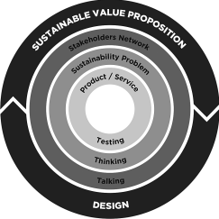

Smart research :Value Proposition Design
Geschreven door Mirja Vink
In deze blog ga ik jullie wat meer vertellen over value proposition design. Ik zal ingaan op wat value proposition design is, hoe je het kunt toepassen en hoe je het op een duurzame manier kunt inrichten.
Value proposition design
In de literatuur wordt value proposition design beschreven als een tool die een organisatie kan helpen om om de patronen van waardecreatie beter te begrijpen en om de ervaring en skills van de mensen beter te gebruiken ( Osterwalder, Pigneur, Bernarda, Smith, 2015).
The value proposition canvas heeft twee kanten: een customer profile en een value map.In figuur 1 valt een visuele weergave hiervan te zien.
 Figuur 1: value proposition canvas (Osterwalde et al, 2015)Een customer profile geeft nieuwe inzichten in de klanten van de organisatie. Een customer profile beschrijft de ‘job’ die een klant probeert af te maken in zijn werk of leven. Dit kan een taak zijn, een probleem of een wens die zij hebben. Er zijn verschillende soorten jobs: Functionele, sociale, emotionele en supporting jobs. Daarnaast beschrijft een customer profile ook de ‘pains’ die een klant ervaart. Deze pains zorgen ervoor dat de ‘job’ niet succesvol kan worden uitgevoerd. Dit kunnen obstakels, risico’s of ongewenste uitkomsten zijn. Het allerlaatste onderdeel van de customer profile is de ‘gains’ die een klant krijgt bij het uitvoeren van de ‘job’. Hier gaat het om de positieve uitkomst die de klant ervaart tijdens het uitvoeren van de ‘job’. Er zijn verschillende gains: vereiste gains, verwachte gains, verlangde gains en onverwachte gains.
Naast de customer profile valt er een value map te zien. Een value map beschrijft hoe de organisatie waarde gaat creëren voor de klant. Een Value map bestaat uit drie onderdelen. Ten eerste, de pain relievers. Pain relievers zijn de manier waarop de producten of diensten van een organisatie de problemen of pain van een klant oplossen. Ten tweede zijn er de gain creators. De gain creators zijn manier waarop de producten of diensten van een organisatie een voordeel realiseren voor de klant. Als laatste zijn er dan nog de products and services. De products en services zijn de producten en diensten die de waardepropositie van een organisatie invullen. Ook zijn deze producten en diensten hetgeen wat de klant helpt om zijn taken succesvol uit te voeren.
Als de customer profile en de value map op elkaar aansluiten, is er sprake van fit.Sustainable value proposition design
Duurzaamheid is een hot topic, voor iedereen. Het is voor bedrijven ook erg belangrijk om over te gaan op een business model dat duurzaamheid ook als een belangrijk onderdeel ziet.
In het rapport “Bridging sustainable business model innovation and user-driven innovation: A process for sustainable value proposition design” (Baldassarre, 2017) gaat het vooral over hoe een value proposition design duurzaam gemaakt kan worden. “User-driven innovation is an approach to business innovation that can help overcome some key challenges in the development of sustainable value propositions. “ (Baldassare, 2017) Hier in wordt beschreven dat user-driven innovatie hoogstwaarschijnlijk organisaties kan helpen innoveren op een manier waarmee zij grote uitdagingen in het ontwikkelen van de duurzaam waardeproposities kunnen overwinnen. Er werd gevraagd aan de eindgebruikers en andere stakeholders over mogelijke veranderingen binnen de organisaties om zo grotere waarde toe te kunnen voegen, eveneens op duurzaam gebied. In figuur 2 is het schematisch te zien.
In de afbeelding hiernaast valt een schematische weergave te zien van het proces naar sustainable value propositions. De bovenste helft van de cirkel staat voor de sustainable value proposition en de drie bouwstenen hiervan. De onderste helft van de cirkel staat voor het ontwerpproces gebaseerd op user-driven innovatie. (Baldassare, 2017)
Figuur 2: sustainable value proposition
Het allerbelangrijkste bij de sustainable value propositions is het betrekken van de stakeholders in het proces. Met de methode hierboven zal er hoogstwaarschijnlijk een betere fit zijn.
Conclusie Een value proposition design is ontzettend belangrijk voor ieder bedrijf. Een goede ingevulde customer profile en value map zorgen voor de fit tussen de klant en de organisatie. Tegenwoordig is alleen die fit niet genoeg, want er is nog een criteria bijgekomen: Duurzaamheid. Een sustainable value proposition design neemt duurzaamheid en de stakeholders mee in het proces. Dit zorgt voor een betere fit, wat zal leiden tot meer afname van de services of producten die een bedrijf te bieden heeft.Bibliografie
Baldassarre, B., Bocken, N., Calabretta, G., & Jaskiewicz , T. (2017).Bridging sustainable business model innovation and user-driven innovation: A process for sustainable value proposition design . Osterwalder, A., Pigneur, Y., Bernarda, G., & Smith, A. (2014).
Value Proposition Design: How to Create Products and Services Customers Want.